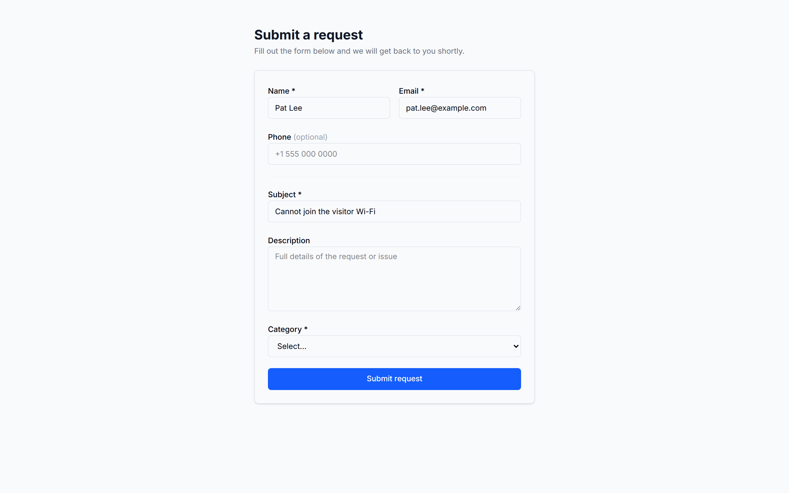
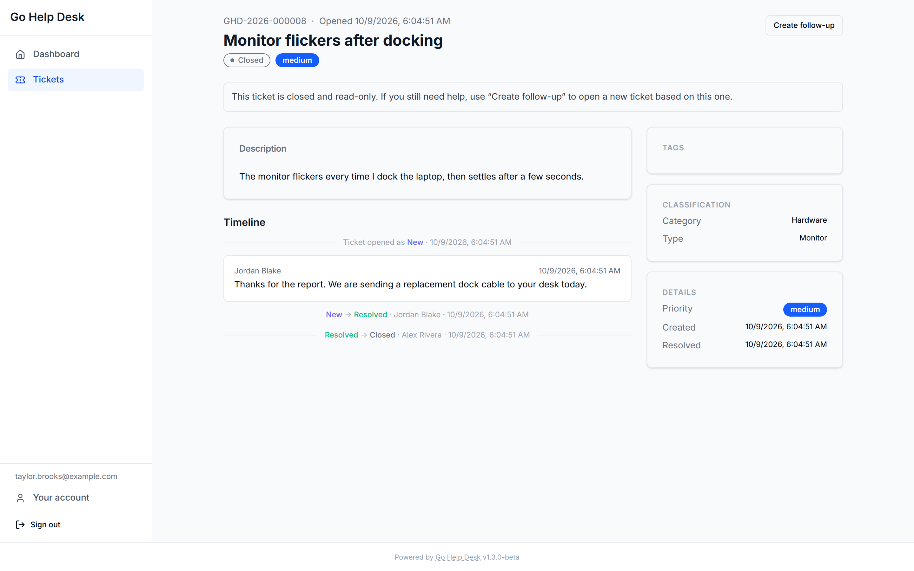

Working with Tickets
Creating, managing, and resolving support tickets.
Creating a ticket
Click New ticket from the dashboard or ticket list. A ticket is filed as the signed-in user. (Through the MCP server, staff can name another user as the reporter.)
Required fields
- Subject: a short summary. This is the ticket's title across all views.
- Category — required. At least one Category must be configured before any ticket can be created.
Optional fields
- Description: the full detail of the request, as plain text. Staff read this first, so include error messages, steps to reproduce and what you have already tried.
- Type — shown only if the selected Category has Types defined. Filters Items.
- Item — shown only if the selected Type has Items defined.
- Priority: defaults to Medium. Only staff and admins can choose it, when they create a ticket. It cannot be changed afterwards.
- Attachments — files can be attached at creation. See Attachments.
CTI cascade behavior
The three dropdowns are chained:
- Selecting a Category fetches and populates the Type dropdown. If the Category has no Types, the Type field is not shown.
- Selecting a Type fetches and populates the Item dropdown. If the Type has no Items, the Item field is not shown.
- Changing the Category clears the Type and Item selections.
- Changing the Type clears the Item selection.
Fields by role
| Field | Guest | User (logged in) | Staff / Admin |
|---|---|---|---|
| Name, email, phone | Name + email required; phone optional | — (uses account) | — |
| Category | Active only | Active only | All |
| Type | Not shown | Active only | All |
| Item | Not shown | Not shown | All |
| Priority | Defaults to Medium | Defaults to Medium | Selectable |
| Attachments | Not available | Yes | Yes |
Guest ticket submission New in 1.3.0
Guest submission is off by default. When it is enabled (Admin → Settings), the public form at /submit is reachable without logging in. Required: name, email, subject and category, which must be an active one. Phone is optional. Type, Item and priority are not shown and are not accepted: priority is always Medium on a guest ticket.

On success the page shows the ticket's tracking number, which can be quoted when following up by phone or email, and the server emails the address a private link to that one ticket. The link is the credential: there is no guest password and no guest account.
The guest link
- It opens one ticket and nothing else. A guest sees the subject, description, status, and the public replies — internal notes are never included, and staff names are not shown. They can post a reply, subject to the same lifecycle rules as anyone else, including the reopen window.
- No attachments on the guest page. The guest page has no upload control and does not list attachments, and a guest cannot download one. The guest API does accept a file (
POST /api/v1/guest/attachments) while the guest could still reply, under the same rules as a reply. - It is replaced every time the help desk writes to them. A staff reply, a status change, a resolve or a reopen by staff each send a fresh link and invalidate the previous one immediately. There is no grace period, so the newest email is the one that works.
- Closing the ticket stops the link being replaced, but does not revoke it. The last link sent still opens the ticket, read-only, until it expires. No mail is sent for the close. A guest can still open a follow-up from a closed ticket with the link.
- It expires 30 days after it was issued.
- Lost it?
/tracktakes a tracking number and the email address and mails a new link, replacing the old one. It always answers the same way whether or not those details matched anything, so it cannot be used to find out which tickets exist. One request per ticket every five minutes.
The token is stored only as a hash, and the emailed link carries it after a # so that it never reaches a server log. The page strips it out of the address bar as soon as it loads, so it survives neither browser history nor a screenshot of the URL.
Guest notification email carries no ticket content — only the tracking number and the link. That is unchanged since v1.2.0.
Ticket lifecycle
A ticket moves through statuses over the course of its life. The default lifecycle is:
New → In Progress → Pending → Resolved → [reopen window] → Closed
↑ |
└── Reopened ──┘Statuses are customizable — admins can add intermediate statuses. The system statuses (New, Resolved, Closed) have fixed behavior regardless of their display name.
Status transitions
| Transition | Who can trigger it | Notes |
|---|---|---|
| Any status → any status | Staff, Admin | Only an administrator can move a ticket to Closed, and leaving Closed follows the rows below. |
| Any → Resolved | Staff, Admin | Optionally captures resolution notes. Starts the reopen window timer. |
| Resolved → Closed (automatic) | System | Triggered when the reopen window expires. A background sweep checks every five minutes. |
| Resolved → Closed (manual) | Admin only | Closes a ticket immediately, bypassing the reopen window. Use the Close Ticket button on the ticket detail page or POST /api/v1/tickets/{id}/close. |
| Resolved → Reopened (via reply) | User | Only within the reopen window. Automatically transitions the ticket to the reopen target status (New by default). |
| Closed → any | Nobody, by default | Admins, or staff and admins, only if Reopening closed tickets allows it. Requesters never can. Otherwise open a follow-up. |
| Resolved → any other status (manual) | Staff, Admin | An ordinary status change from the status picker, whatever the reopen window says. The Reopen action itself applies only to a Closed ticket. |
| Closed → Reopened (manual) | Admin, or staff and admin, per policy | Only when Reopening closed tickets allows the role. Requesters never can. |
Resolution notes
When marking a ticket Resolved, staff are prompted to optionally enter resolution notes — a brief summary of what was done and how the issue was fixed. These notes are visible to the submitter and are preserved when the ticket is reopened. They're useful for building a history of known fixes.
The reopen window
After a ticket is Resolved, the submitter has a configurable number of days to reopen it by replying. The default is 7 days. When a user adds a reply to a Resolved ticket within the window:
- The reply is saved.
- The ticket status is automatically changed to the reopen target status (New by default).
- The reopen is recorded in the ticket's Activity feed, and a
ticket.reopenedevent goes to subscribed webhooks.
After the window expires, the ticket is closed automatically. A closed ticket is read-only for its requester: they can still view it, but cannot reply. It stays Closed unless Reopening closed tickets allows staff or administrators to reopen it. The way on is a follow-up ticket.
The reopen window is set by the administrator, and 0 means no reopening at all: a Resolved ticket is closed, and read-only, on the next automatic sweep, about five minutes later.
Follow-up tickets
A Closed ticket is not reopened to continue its work. The way on is a follow-up: a new ticket that continues the work, linked to the closed ticket as its child. The closed ticket is the parent. The follow-up and its link are created together, so one never exists without the other, and opening a follow-up does not change the closed ticket.
Who can open one:
- Staff and admins can open a follow-up from any Closed ticket they can see. It copies the subject, description, category, type, item, priority and requester.
- The requester can open one from their own Closed ticket: an account holder through their account, or a guest through their link. It copies the subject, description and category, and the type for an account holder, never for a guest. It starts at Medium priority, with no item, unassigned, and with a fresh SLA clock.

A requester can open one follow-up per closed ticket. A second request from a requester is refused with 409 follow_up_exists, and a follow-up opened by staff counts towards that one. Staff and administrators are not limited. Staff, admins and the requester open one with Create follow-up on the ticket. The API routes are POST /api/v1/tickets/{id}/follow-up for a signed-in user and POST /api/v1/guest/follow-up for a guest link. A follow-up is the only write a guest can make on a closed ticket.
Replies & internal notes
Public replies
Public replies are the standard response mechanism. They are visible to:
- The ticket submitter
- All staff and admins who have access to the ticket
- Guest users with a valid access link (for guest-submitted tickets)
When staff post a public reply with Send ticket update email to customer ticked, which is the default, the requester is emailed a notice with a link to the ticket. The email carries no reply text. Nobody else is emailed about replies.
Internal notes
Staff and admins can add internal notes to any ticket. Internal notes are:
- Never visible to users or guests, regardless of their access level.
- Not included in email notifications to users or guests.
- Visually distinguished in the ticket thread with a different background color and a "Internal note" label.
- Visible to all staff and admins who can see the ticket.
Use internal notes for:
- Recording investigation steps and findings
- Noting escalation decisions and reasons
- Coordinating with other staff members ("I'll contact the vendor, you handle the user")
- Linking to internal tools or runbooks
- Documenting failed solutions before finding the correct one
Formatting
Replies, notes and descriptions are plain text. Line breaks are kept. Markdown and HTML are shown exactly as typed, never rendered.
Replies are permanent
A reply or note cannot be edited or deleted once it is posted, by anyone. To correct one, post another.
Inserting canned responses
Staff and admins see an Insert canned response button above the reply box. It opens a searchable picker limited to the responses in scope for that ticket — global templates, plus any scoped to the ticket's category or category and type. Selecting one splices the template's body into the reply at the current cursor position (or appends it, if the box is empty), and the inserted text stays fully editable before sending. Managing the templates themselves is an admin task — see Canned Responses in the Admin Guide.
Linked tickets
Any ticket can be linked to any other ticket, regardless of status. Links are always bidirectional — adding a link on ticket A automatically creates the reverse link on ticket B.
Link types
| Type | Meaning | When to use |
|---|---|---|
related_to |
These tickets are related in some way. | They affect similar systems, came from the same user, or are otherwise connected but neither caused the other. |
parent_child |
One ticket is a sub-issue of another. | A "batch laptop deployment" parent ticket with individual "setup laptop for [user]" children. Or a widespread network outage parent with individual "I can't access the VPN" children. |
caused_by |
This ticket was caused by another ticket's issue. | A failed Windows update ticket caused several "Outlook won't open" tickets. |
duplicate_of |
This ticket is a duplicate of another. | A user submitted the same request twice. Mark the newer one as a duplicate of the original. |
Adding a link
From the ticket detail view, click Add link in the Linked tickets section. Search for the target ticket by ID or by subject keywords. Select the link type and confirm.
Removing a link
Click the × next to any linked ticket. This removes the link in both directions. Staff and admin only — users cannot modify links.
Tags
Tags are free-form labels that staff can attach to any ticket. They appear in the ticket detail sidebar and are useful for grouping tickets by theme, campaign, affected system, or any other dimension that doesn't fit the formal Category/Type/Item hierarchy.
Adding a tag
In the Tags section of the ticket sidebar, type a tag name and press Enter — or pick a suggestion from the autocomplete dropdown. Tags are stored lowercase regardless of how they're typed.
- If the tag already exists and is active, it is applied immediately.
- If the tag is new, it is created automatically on first use.
- If the tag exists but has been deactivated by an admin, an error is shown. Only an admin can restore a deactivated tag — it cannot be re-created by staff.
Removing a tag
Click the × on a tag pill to remove it from the ticket. This does not delete the tag globally — it only removes the association with this ticket. Staff and admins only.
Autocomplete
As you type, existing active tags that match the prefix are shown as suggestions. Select a suggestion to apply it, or press Enter to create a new tag with the text you've typed. Tags with no matching suggestions show a "Press Enter to create…" hint.
Tag visibility
Tags are for staff. Only staff and admins can see, add or remove them; the requester never sees the tags on their ticket.
Admin tag management
Admins can deactivate inappropriate tags or restore previously deactivated ones from Admin → Tags. See Tags in the Admin Guide for details.
Assignment
A ticket can be assigned to:
- A specific staff member: the ticket appears in their personal queue. No email is sent for an assignment.
- A group — the ticket appears in the queue of every member of that group. Useful when you want a team to handle the ticket without specifying an individual.
- Unassigned — visible to all staff with scope for the ticket's CTI classification.
Who can assign
Staff and admins can assign tickets to any staff member or group, regardless of scope. This is intentional — cross-team escalation should not be blocked by routing rules. A ticket can be assigned to staff outside their normal scope, and it will appear in the assignee's queue.
Reassignment
Reassigning a ticket sends no email to either assignee. It is recorded in the ticket's Activity feed, and a ticket.assigned event goes to subscribed webhooks.
Assignment and scope
Scope controls what tickets a staff member sees in their default queue. Assignment overrides this for the assignee: if you are assigned a ticket outside your scope, it appears in your queue. Scope narrows what staff can see only when Limit staff to their group scope is on under Admin → Settings → General → Ticket visibility. It is off by default, and then every staff member can see and find every ticket. With it on, a ticket outside a staff member's visibility answers as not found, even by its tracking number.
Custom fields
Admins can define additional fields (text, textarea, number, or select) and assign them to CTI nodes. When you create a ticket and select a Category, Type, or Item, any fields assigned at those levels with visible on new enabled will appear on the form. Required fields must be filled before submitting.
After a ticket is created, custom field values appear in the Custom Fields sidebar card on the ticket detail page:
- Staff and admins can click Edit to update values at any time.
- Regular users see values in read-only form. If no values have been set, the card is not shown.
Custom fields are configured by admins under Admin → Custom Fields and assigned to CTI nodes in Admin → Categories. See the Admin Guide for details.
Attachments
Any logged-in user (including regular users) can attach files when creating a ticket. Attachments are listed on the ticket detail page and served through the API. Authentication is required to download. Reporters can also attach files to a reply, up to five per reply. A guest cannot attach a file on the submission form or on the guest page, and cannot download any attachment.
What the server does with an uploaded file changed substantially in 1.3.0. This section is the summary; the full account, content detection, the three storage tiers, the quarantine archive, and the optional reputation lookup, is on the Attachment Security page.
Limits
| Limit | Value |
|---|---|
| Maximum file size | 25 MB per file |
| Maximum filename length | 255 bytes, valid UTF-8, no NUL, control or text-direction characters |
| Maximum image size | 25 megapixels, and 100 MB once decoded — both worked out from the header before any decode |
| Total per ticket | Unlimited |
Allowed file types
Which extensions this instance accepts is an operator setting Changed in 1.3.0, attachment_allowed_types under Admin → Settings → Attachments. It was a fixed list in the source up to and including 1.2.0. An empty list is a valid setting and means this instance takes no attachments at all.
The shipped default is the same set 1.2.0 accepted:
| Format | Extension(s) |
|---|---|
.pdf | |
| Word document | .docx |
| Excel spreadsheet | .xlsx |
| Plain text / log | .txt, .log |
| JPEG image | .jpg, .jpeg |
| PNG image | .png |
| BMP image | .bmp |
The extension is checked first, before the file body is read; an extension this instance does not accept is 415 unsupported_type.
What is recorded about every upload
Every stored file carries three facts about the bytes that arrived, whatever the settings say: the detected content type, the SHA-256, and whether the content contradicted the extension it arrived under. They are facts, not enforcement — recording a contradiction never refuses an upload by itself.
Both the detection and the hash are taken on the file exactly as uploaded, before any recompression or wrapping. For a recompressed image, that means the recorded hash is not the hash of the file on disk.
Attachments uploaded before 1.3.0 carry none of this, and nothing is backfilled. The ticket UI renders that as an absence rather than as a clean bill of health: "nobody looked" and "nothing wrong" are different statements.
When content does not match the name
On the ticket, such a file is flagged with a line saying what it actually looks like — "Content looks like HTML, not a .pdf file". What happens to it beyond that is the attachment_mismatch_handling setting: refused by default with 415 invalid_file, or stored wrapped in a ZIP named suspicious-<crc32>.zip if the operator chose that.
That only applies where the type the file turned out to be is not one this instance accepts, under a name claiming a binary format. A genuine PNG called .pdf is flagged and stored under its own name either way, and a file named .txt, .log, .csv or .md is never wrapped or refused for its content. See Attachment Security for the exact rules.
Image recompression
Uploaded images (JPEG, PNG, BMP) are decoded and re-encoded as both JPEG (quality 85) and PNG. Whichever produces the smaller file is stored, under the name it was uploaded with. An image with any transparency in it is always stored as PNG. An image that cannot be decoded, or that would cost too much memory to decode — more than 25 megapixels, more than 100 MB once decoded, or a JPEG whose header cannot be read — is refused with 422 invalid_image; see Attachment Security for the budget. A wrapped or quarantined file is not recompressed — those are alternatives, not steps.
Virus scanning
An unscannable upload is now refused by default wherever a scanner address is configured Changed in 1.3.0. Up to and including 1.2.0, a ClamAV that was unreachable or unconfigured meant a logged warning and an upload accepted unchecked, so an instance whose scanner had been dead for a month accepted everything and showed the administrator nothing. That behaviour is now reachable only by choosing it.
Uploads are passed to the configured ClamAV daemon before they are stored. What happens to a file the scanner could not look at is the attachment_scan_policy setting:
| Policy | An unscannable upload |
|---|---|
off | Accepted. Nothing is scanned at all. |
required | Refused with 503 and a Retry-After. The default wherever a scanner address is configured. |
permissive | Accepted, with a warning logged. The behaviour up to and including 1.2.0. |
A file the scanner identifies is refused with 422 infected and the user is shown the scanner's name for it — unless the operator has set attachment_infected_handling to quarantine, in which case it is stored inside a password-protected archive and the ticket carries a warning banner. See the Admin Guide for both settings.
Docker Compose does not scan by default. To scan with the bundled ClamAV, set CLAMAV_ADDR=tcp://clamav:3310 and COMPOSE_PROFILES=antivirus in docker/.env; see Getting Started: Virus scanning. For other installs, point CLAMAV_ADDR at your own daemon (tcp://host:port or unix:///path/to/clamd.sock), or set the address under Admin → Settings → Attachments, which takes effect without a restart.
Downloads
Attachments are download-only. There is no previewer Changed in 1.3.0: no lightbox, no thumbnail, no inline PDF view. Every attachment is served as application/octet-stream with Content-Disposition: attachment, whatever the file claims to be, and the download route refuses a request whose Sec-Fetch-Dest says the browser intends to render it. Before 1.3.0 the content type came from the filename, so a PDF went out as application/pdf and one header was holding the whole thing up.
Storage
Files are stored under ATTACHMENT_DIR/tickets/<ticketID>/ with UUID-based filenames to prevent enumeration. The original filename is preserved in the database and shown in the UI and Content-Disposition headers on download — except where the server renamed the file itself, which is the quarantine and mismatch wraps above.
Search
Live search
The search bar at the top of the ticket list searches across tracking number, subject, and description, the latter two powered by Postgres full-text search and ranked by relevance. Results appear after you type at least 2 characters (with a short debounce). A spinner is shown while results load.
- Tracking number searches use a prefix match: typing
GHD-2026-0matches all tickets in that series. - Subject and description searches tokenize your query into words and prefix-match each one — e.g.
print jammatches a ticket containing a word starting with "print" and a word starting with "jam", in any order or field. A match in the subject ranks above one only in the description. - Users only see results from their own tickets. Administrators search every ticket. Staff search the tickets they can see, which is every ticket unless Limit staff to their group scope is on.
Jump to ticket (staff and admin)
Staff and admins can submit the search form (press Enter or click Jump to ticket) to navigate directly to a ticket by its exact tracking number or UUID. If no match is found, an inline error is shown.